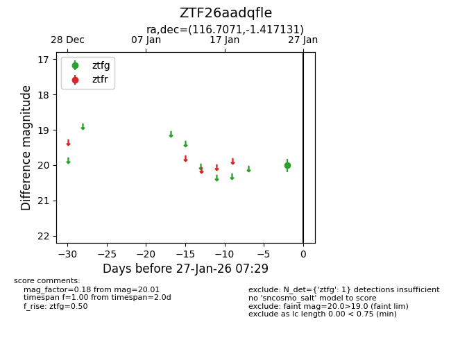
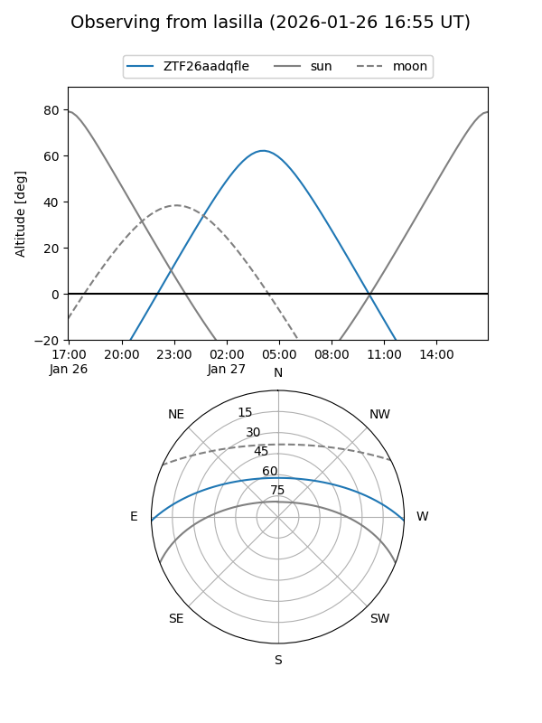
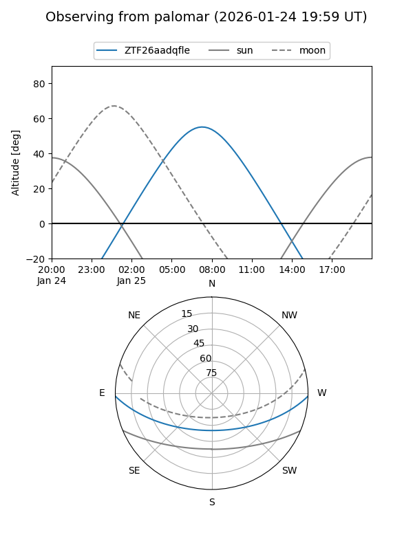

ZTF26aadqfle
Target ZTF26aadqfle at 2026-01-27 07:31
Aliases and brokers:
FINK: link
Lasair: link
ALeRCE: link
alt names
ZTF26aadqfle (ztf,fink_ztf)
Coordinates:
equatorial (ra, dec) = 116.7071,-1.41713
equatorial (HMS+DMS) = 07:46:49.70,-01:25:01.67
galactic (l, b) = (220.6248,+11.63450)
Flags:
Photometry:
last ztfg=20.01
1 ztfg detections
Lightcurve

Visibility


Additional plots